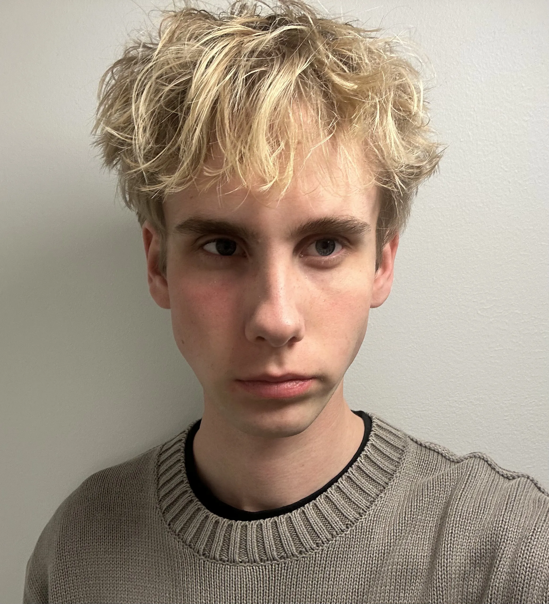

OM MIG
MMD FORÅR 2026Jeg er multimediedesigner studerende med en forkærlighed for det visuelle møde mellem teknologi og æstetik. Mit arbejde udspringer af nysgerrighed.
Fra idé til færdigt produkt arbejder jeg struktureret med research, iteration og brugerfokus. Jeg trives i projekter der kræver både kreativt mod og teknisk præcision.

Uddannelse
Multimediedesigner
EK — 2026
Lokation
København
Danmark
| DESIGN | UI/UX, Grafisk design |
| KODE | HTML, CSS, JavaScript |
| VÆRKTØJER | Figma, Adobe CC |
| SPROG | Dansk, Engelsk |
- Kultur & digital æstetik
- Interaktionsdesign & UX
- Generativ kunst & kreativ kode
- Typografi & visuel kommunikation
ERHVERVSERFARING:
- Pædagogmedhjælper, Krudthuset
- Pædagogmedhjælper, Dronning Louises børnehus
- Lederansvarlig, COOP 365
MIT FØRSTE SEMESTER
På første semester af Multimediedesign har jeg opnået en grundlæggende forståelse for designprocesser og digital produktudvikling. Jeg har arbejdet med UX/UI-design, indholdsproduktion og webudvikling gennem HTML, CSS og grundlæggende JavaScript.
Derudover har jeg fået erfaring med design- og prototypeværktøjer som Figma og Adobe Creative Cloud, hvor jeg har udviklet visuelle løsninger med fokus på både brugeroplevelse og æstetik. Semesteret har givet mig et solidt fundament inden for både kreativt design og teknisk udvikling.